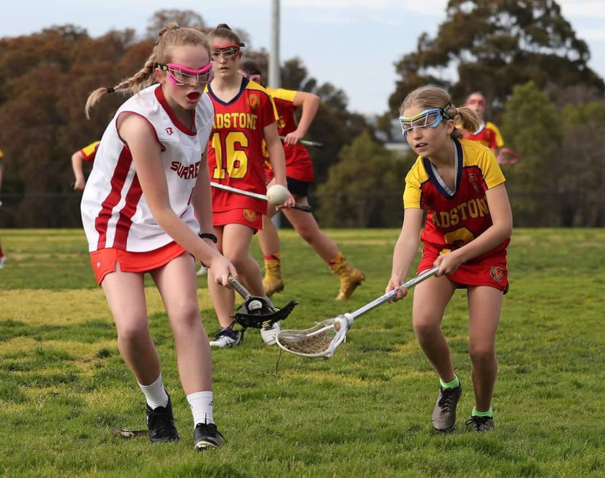

An exciting alternative to mainstream sport, in a club where every player belongs.
Lacrosse offers an exciting alternative to mainstream sport, combining the speed, skill and excitement of the ‘Fastest Game on Two Feet’ with a welcoming club culture where every player belongs.

Lacrosse combines the speed of basketball, the strategy of soccer and the athleticism of football into one exciting sport.
Unlike many traditional sports where players can go long periods without involvement, lacrosse keeps everyone engaged.
Players develop specialised skills including catching, throwing, cradling, shooting and defending with a stick.
Lacrosse provides opportunities for different strengths and abilities — there is a place for everyone.
Smaller sporting communities often create stronger connections and lifelong friendships.
Lacrosse offers access to state, national and international pathways.
At Chadstone Lacrosse Club, we combine fast-paced competition, personal development and a welcoming, family-focused community where players of all ages and abilities can learn, belong and thrive. For people seeking something more engaging than mainstream sports, Chaddy delivers a unique combination of speed, skill, teamwork and belonging.
If the answer is yes, then Chaddy is the club for you! Whatever your age, whatever your experience — be taught by qualified coaches, play at great facilities and make friends for life.